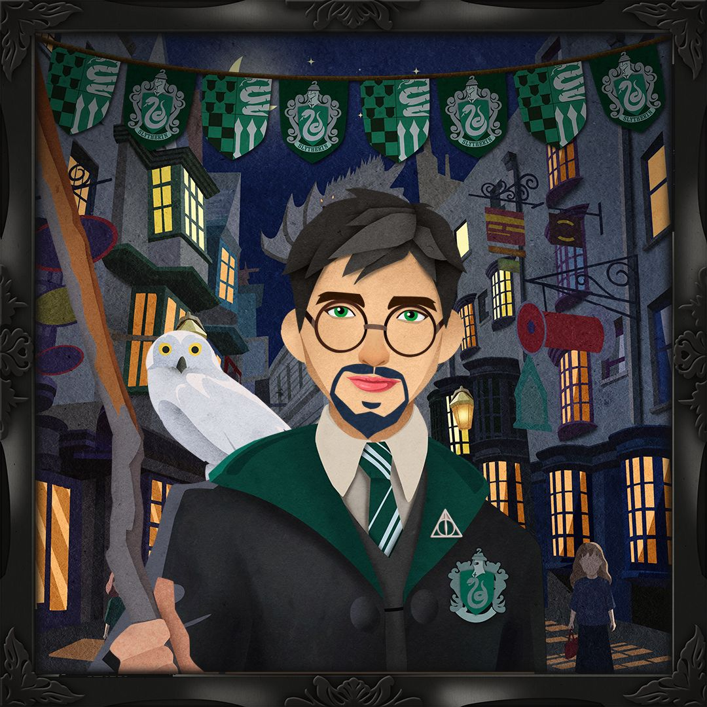

<ion-header class="mobile-nav">
  <ion-toolbar>
    <ion-menu-button class="menu-button"></ion-menu-button>
    <div class="header-img-con">
      
    </div> 
  </ion-toolbar>
</ion-header>

<nav class="nav">
  <ion-row class="">
    <ion-col size="2">
      <!--  -->
    </ion-col>
    <ion-col size="8" class="nav-center">
      
    </ion-col>
    <ion-col size="2" class="nav-end">
        <input fill="outline" placeholder="Search" class="search">
        
    </ion-col>
  </ion-row>
  <div class="secondary-nav" >
    <ion-button fill="clear" class="nav-feature" [routerLinkActiveOptions]="{exact:true}" routerLink="/films"  routerLinkActive="active-item" >FILMS</ion-button>
    <ion-button fill="clear" class="nav-feature" [routerLinkActiveOptions]="{exact:true}" routerLink="/jk-rowling-originals" routerDirection="root" routerLinkActive="active-item" >J.K. ROWLING ARCHIVE</ion-button>
    <ion-button fill="clear" class="nav-feature" [routerLinkActiveOptions]="{exact:true}" routerLink="/fact-files" routerDirection="root" routerLinkActive="active-item" >FACT FILES</ion-button>
    <ion-button fill="clear" class="nav-feature" [routerLinkActiveOptions]="{exact:true}" routerLink="/books"  routerLinkActive="active-item" >BOOKS</ion-button>
    <ion-button fill="clear" class="nav-feature" [routerLinkActiveOptions]="{exact:true}" routerLink="/sorting-hat" routerDirectDion="root" routerLinkActive="active-item" >SORTING HAT</ion-button>
    <ion-button fill="clear" class="nav-feature" (click)="onLogout()">LOGOUT</ion-button>
  </div>

</nav>
